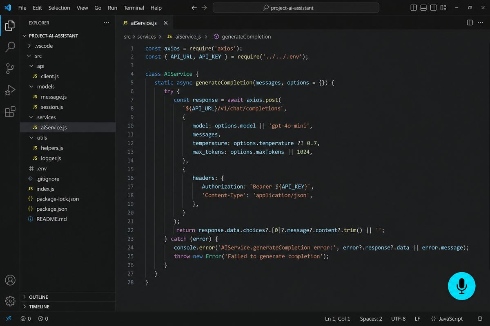
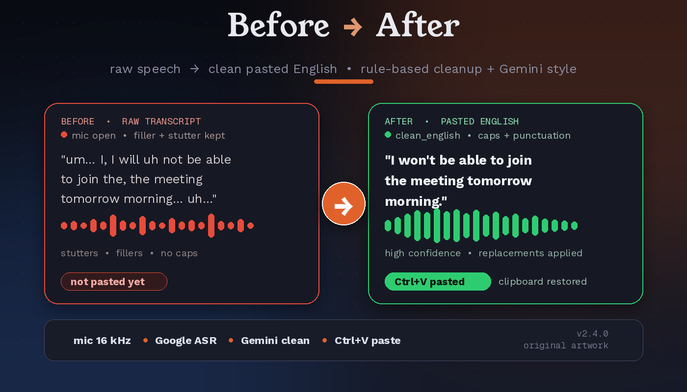

বাংলা You say
আমি কাল সকালে মিটিং এ যোগ দিতে পারবো না
JoyVoice pastesI won't be able to join the meeting tomorrow morning.
JoyVoice is a floating-mic voice typing and speech translation app for Windows. Dictate in 10 languages, including বাংলা and English, and get clean text pasted into whatever app your cursor is in. No window switching, no copy and paste.
You say · Banglaআমি কাল সকালে মিটিং এ যোগ দিতে পারবো না
JoyVoice pastes · EnglishI won’t be able to jointhe meeting tomorrow morning.
Pasted clipboard restored
Switch from Bangla to Russian to Chinese mid-conversation. Auto-detect means you never touch a language setting, or lock a source language if you prefer.
আমি কাল সকালে মিটিং এ যোগ দিতে পারবো না
Я не могу присоединиться к встрече завтра утром
我明天早上不能参加会议
لا أستطيع الانضمام إلى الاجتماع صباح الغد
Examples are taken from the project README. Output depends on the speech engine, the model you configure and your recording.
Press F8, speak, press F8 again. The pipeline runs in the background and pastes where your cursor is.
sounddevice.Total time varies with recording length and network conditions. The README cites roughly 1–2 seconds for short audio on the optional native gateway route; longer recordings take longer. JoyVoice is batch dictation: it processes when you stop recording.
Everything below is in the app today, taken from the JoyVoice README and changelog.
Bangla, English, Russian, Hindi, Spanish, Arabic, Chinese, Japanese, French and Portuguese. Speak naturally and JoyVoice detects the language, or lock a source language if you prefer.
Pick any supported language as the target, not only English. Output modes: original only, translation only, or both together. Labels adapt to your language pair.
Clean English, raw transcript, prompt for AI, professional message and Facebook post. The AI styles use a text model and need Cloud mode.
A translucent, always-on-top mic pill with a live 5-bar waveform, recording timer, language badge (like BN to EN), live preview and a confidence bar.
Saves your clipboard, pastes the result with Ctrl+V (3 attempts, exponential backoff, 300 ms default delay), then restores what you had copied.
Every result is written to local history before paste is attempted, so a failed paste never costs you the text. Right-click the mic to re-copy your last 5 dictations.
No API key, no cloud. A local faster-whisper model (Tiny, Base or Small) downloads once, then works fully offline. Bangla to English translation is built in.
Name the target at the end of a sentence (for example saying a language name, or a Bangla phrase like “বাংলায় দাও”) to switch the target for that one dictation.
F8 toggles recording (or hold-to-record), Ctrl+Shift+L cycles the language pair, Esc cancels mid-record or mid-transcribe.
Set the OpenAI-compatible base URL, API key and audio/text models in Settings, API. Fetch models and Test connection buttons included. No environment variables required.
A 2-second visibility watchdog restores the widget if Windows hides it, and a 5-second hotkey health check re-registers F8 after sleep, wake or UAC changes.
In v2.5.5, if English is required and translation fails, JoyVoice pastes nothing untranslated and saves the transcript to History. Logs redact secrets and keep only short previews.
Switch engines in Settings. Cloud mode is the default; the single JoyVoice.exe includes both.
Default · needs an API key
No API key · no cloud calls after setup
Planned, not shipped: offline multilingual translation (NLLB) and offline AI text styles (Ollama) for Free Mode.
Each one works as a source (or via auto-detect) and as a translation target. Bangla gets first-class treatment: Bangladeshi Bengali with English code-switching is handled explicitly in the transcription prompt.
bnenruhiesarzhjafrptautoVoice typing is only useful if you can trust it. These safeguards are in the app.
The floating widget changes colour with each state: gray when idle, an orange pulse while recording, blue while transcribing, a green pop when pasted, and red on error. Audio beeps mark start, stop, success and error, so you don’t have to look.


Windows 10 or 11 only. Grab the prebuilt app or run from source.
A single JoyVoice.exe (about 173 MB) with no Python or venv. It supports both Cloud and Free & Offline mode.
JoyVoice.exe. The floating mic appears.JV_API_KEY.Windows only. Uses Python 3.11 and the project’s requirements.txt.
git clone https://github.com/MHJoy99/joyvoice.git
cd joyvoice
python -m venv .venv
.venv\Scripts\activate
pip install -r requirements.txt
set JV_API_KEY=your_bdx_market_api_key
python app\main.pyPrefer a launcher? Double-click run.bat in the repo, or make a desktop shortcut to it.
Heads up: cloud mode sends your recorded speech and transcript text to the services you configure. Use Free & Offline mode if that matters for your use, and respect the terms of the services you connect.
Stored at %APPDATA%\JoyVoice\settings.json and editable from the Settings window (right-click the mic, or use the tray icon).
| Key | Default | What it does |
|---|---|---|
language | auto | Source language: auto-detect, or lock to bn, ru, zh and so on |
target_language | en | Translation target: any of the 10 supported codes |
output_mode | translation | original, translation or both |
text_style | clean_english | raw, clean_english, prompt_for_ai, professional_message or facebook_post |
hotkey | F8 | Global toggle key (presets or a custom combination) |
hotkey_mode | toggle | toggle, or hold to record while the key is down |
paste_delay_ms | 300 | Delay before Ctrl+V |
restore_clipboard | true | Restore your original clipboard after pasting |
engine_mode | cloud | cloud (uses an API key) or free (local models, no API key) |
free_asr_model | small | Free Mode local Whisper model: tiny, base or small |
Settings tabs: Output, General, API, Free Mode, Hotkey, Audio, Paste, Replacements and History. Config precedence for API values: settings.json, then environment variable, then built-in default.
Everything on this list is future work from the README roadmap. None of it is shipped yet.
JoyVoice is a free, open-source (MIT) floating-microphone voice typing and speech translation app for Windows 10 and 11. You press F8, speak, press F8 again, and the cleaned, optionally translated text is pasted into whichever app has your cursor. It supports 10 languages: Bangla, English, Russian, Hindi, Spanish, Arabic, Chinese, Japanese, French and Portuguese.
Press F8 and speak naturally in Bengali or mixed Bengali and English. With the default auto-detect source and English target, JoyVoice detects the language, translates, and pastes clean English with Ctrl+V into the app under your cursor. The transcription prompt explicitly handles Bangladeshi Bengali with English code-switching, so you do not switch languages manually.
You do not need a GPU. Cloud mode uses cloud services for speech and translation and needs no CUDA or PyTorch. It does need an API key for an OpenAI-compatible endpoint, entered in Settings, API, or set as the JV_API_KEY environment variable. Free and Offline mode needs no API key at all.
Yes, in Free and Offline mode. Click Set up Free Mode in Settings, Free Mode once to download a local Whisper model (Tiny, Base or Small; Small is the default) into %LOCALAPPDATA%\JoyVoice\models. After that it runs without internet. Bangla to English translation is built in offline through Whisper’s translate task. Other translation targets are transcription-only in Free Mode for now, and the AI text styles need Cloud mode.
Ten: Bangla, English, Russian, Hindi, Spanish, Arabic, Chinese, Japanese, French and Portuguese. Any of the 10 can be the spoken source (or use auto-detect) and any of the 10 can be the translation target. Press Ctrl+Shift+L to switch language pair without opening Settings.
It is designed not to. Text is saved to the local history before JoyVoice tries to paste, so it survives a failed paste. For long recordings, if one chunk fails after earlier chunks succeeded, the translated chunks so far are kept instead of dropping the whole dictation, and usable partial speech is preserved in history for review.
No. It saves your current clipboard, pastes the result with Ctrl+V (up to 3 attempts with exponential backoff), and then restores your original clipboard. Restoring is on by default through the restore_clipboard setting.
Not in the clear. Crash reports store only the exception type, the message length and redacted stack frames. Log lines scrub keys and bearer tokens to [REDACTED], show transcripts only as 80-character previews, and never log raw audio bytes. Your API key lives only in local settings or in the JV_API_KEY environment variable.
In cloud mode the recorded speech is sent for transcription, to the Google Web Speech service or to the optional native-audio route of your configured gateway, and the transcript text is sent to the configured text model for translation and styling. The default gateway is https://gpt.bdx.market/v1 and you can point JoyVoice at any OpenAI-compatible base URL in Settings, API. Free and Offline mode makes no cloud calls after the one-time model download.
Not today. JoyVoice is Windows-only because global hotkeys, clipboard automation and audio capture are tied to Win32 APIs. macOS and Linux hotkey and paste backends are on the roadmap as planned work, not shipped.
See all projects on github.com/MHJoy99.
Free, open source and MIT licensed. Download JoyVoice and press F8.